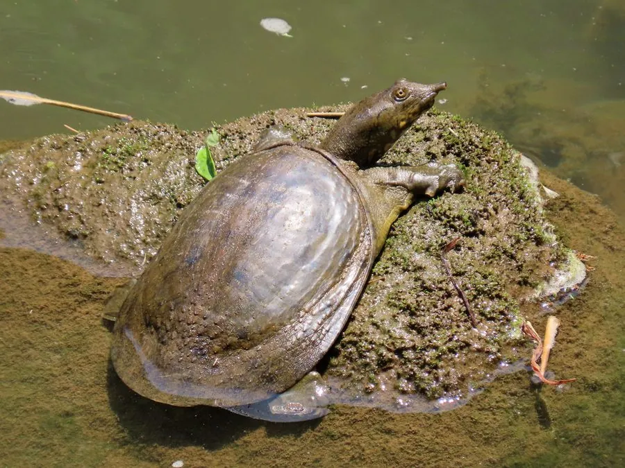

爬行动物 · 动物界
中华鳖 Pelodiscus sinensis

中国常见的食用与养殖龟类，背甲柔软、边缘有肉质裙边，吻部突出成管状，善于游泳和潜伏泥沙，是常见的养殖龟类。
- 分类
- 门脊索动物门纲爬行纲目龟鳖目科鳖科属鳖属
- 栖息环境
- 河流、湖泊、池塘、稻田与泥底水域
- 地理分布
- 中国大部分地区及越南、日本等东亚国家
- 保护级别
- IUCN 易危（VU）；中国未列入国家重点保护名录
物种志
中华鳖背甲长 20–30 厘米，体重 0.5–2 千克，背甲柔软无角质盾片，表面覆盖革质皮肤，边缘有柔软的肉质裙边；体色呈橄榄绿或灰褐色，背甲上常有细密的斑点，腹部白色或淡黄，吻部突出成管状，便于伸出水面呼吸。它的四肢扁平，趾间有蹼，善于游泳和钻入泥沙中潜伏。
它分布于中国大部分地区以及越南、日本等东亚国家，栖息于河流、湖泊、池塘和稻田，以鱼、虾、蟹、螺、昆虫和蛙类为食，多在夜间活动，冬季潜入泥沙中冬眠。每年 4–8 月繁殖，雌鳖在岸边沙土中产卵 10–50 枚，孵化期约 40–60 天。中华鳖是中国传统的养殖品种，野生种群因过度捕捉和栖息地破坏而下降，被列为易危物种；养殖个体供应充足，保护野生鳖仍需减少捕捉。
形态与习性
- 食性鱼、虾、蟹、螺、昆虫和蛙类
- 体长背甲长 20–30 cm
- 体重约 0.5–2 kg
- 寿命约 30–60 年
- 繁殖卵生，10–50 枚，孵化 40–60 天
趣味知识
- 中华鳖背甲柔软、边缘有肉质裙边，与硬壳龟类明显不同。
- 它的吻部突出成管状，可以只伸出鼻子在水面呼吸。
- 中华鳖受惊时会迅速钻入泥沙中躲藏，也会用嘴咬人。